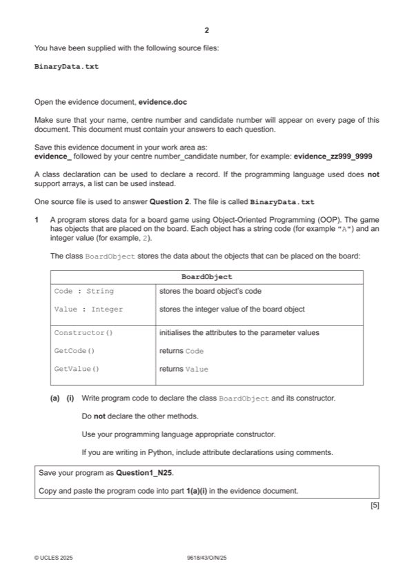

Question 1

Original paper page 2
Part 1(a)(i) — solution
- Class header (and end where appropriate)
- Declaring Code as string and Value as integer
- Constructor header (and end where appropriate) within class …
- … taking two parameters …
- … assigning parameters to attributes
Visual Basic (VB.NET)
Public Class BoardObject
Private Code As String
Private Value As Integer
Sub New(pCode, pValue)
Code = pCode
Value = pValue
End Sub
End Class
Python
class BoardObject():
def __init__(self, Code, Value):
self.Code = Code #string
self.Value = Value # integer
University Press & Assessment 2025 Page 7 of 39
9618/43 Cambridge International AS & A Level – Mark Scheme October/November 2025
Mark points
- Class header (and end where appropriate)
- Declaring Code as string and Value as integer
- Constructor header (and end where appropriate) within class …
- … taking two parameters …
- … assigning parameters to attributes
Part 1(a)(ii) — solution
- 1 get header (and end where appropriate) with no parameter …
- … returning correct value without overriding
- 2nd correct get method
Visual Basic (VB.NET)
Function GetCode()
Return Code
End Function
Function GetValue()
Return Value
End Function
Python
def GetCode(self):
return self.Code
def GetValue(self):
return self.Value
University Press & Assessment 2025 Page 8 of 39
9618/43 Cambridge International AS & A Level – Mark Scheme October/November 2025
Mark points
- 1 get header (and end where appropriate) with no parameter …
- … returning correct value without overriding
- 2nd correct get method
Part 1(a)(iii) — solution
- Creating one instance of BoardObject and storing in correct variable …
- … with correct parameters
- Remaining four created correctly and stored
Visual Basic (VB.NET)
Dim Object1 As BoardObject = New BoardObject("A", 2)
Dim Object2 As BoardObject = New BoardObject("B", 3)
Dim Object3 As BoardObject = New BoardObject("C", 5)
Dim Object4 As BoardObject = New BoardObject("D", 2)
Dim Object5 As BoardObject = New BoardObject("E", 7)
Python
Object1 = BoardObject("A",2)
Object2 = BoardObject("B",3)
Object3 = BoardObject("C",5)
Object4 = BoardObject("D",2)
Object5 = BoardObject("E",7)
University Press & Assessment 2025 Page 9 of 39
9618/43 Cambridge International AS & A Level – Mark Scheme October/November 2025
Mark points
- Creating one instance of BoardObject and storing in correct variable …
- … with correct parameters
- Remaining four created correctly and stored
Part 1(b)(i) — solution
- Class header (and end where appropriate)
- Constructor header (and end where appropriate) within class
- Declaration of 2D array with 10 10 elements of type BoardObject
- Storing BoardObject object with Code "-" and Value 0 in each array element
Visual Basic (VB.NET)
Public Class Board
Private TheBoard(9, 9) As BoardObject
Sub New()
For x = 0 To 9
For y = 0 To 9
TheBoard(x, y) = New BoardObject("-", 0)
Next
Next
End Sub
End Class
University Press & Assessment 2025 Page 10 of 39
9618/43 Cambridge International AS & A Level – Mark Scheme October/November 2025
Mark points
- Class header (and end where appropriate)
- Constructor header (and end where appropriate) within class
- Declaration of 2D array with 10 10 elements of type BoardObject
- Storing BoardObject object with Code "-" and Value 0 in each array element
Part 1(b)(i) — solution
- self.TheBoard = [] #type BoardObject
- TempList = []
Python
class Board():
def __init__(self):
self.TheBoard = [] #type BoardObject
for x in range(10):
TempList = []
for y in range(10):
TempList.append(BoardObject("-",0))
self.TheBoard.append(TempList)
Mark points
- self.TheBoard = [] #type BoardObject
- TempList = []
Part 1(b)(ii) — solution
- Get method header taking 2 (integer) parameters …
- … returning the BoardObject at Board position of parameters
Visual Basic (VB.NET)
Function GetObject(Rowpos, Columnpos)
Return TheBoard(Rowpos, Columnpos)
End Function
Python
def GetObject(self, Rowpos, Columnpos):
return self.TheBoard[Rowpos][Columnpos]
University Press & Assessment 2025 Page 11 of 39
9618/43 Cambridge International AS & A Level – Mark Scheme October/November 2025
Mark points
- Get method header taking 2 (integer) parameters …
- … returning the BoardObject at Board position of parameters
Part 1(b)(iii) — solution
- Set method header taking three parameters (TheObject, row, column) …
- … storing parameter TheObject in TheBoard at parameters row and column
Visual Basic (VB.NET)
Sub SetObject(TheObject, Rowpos, Columnpos)
TheBoard(Rowpos, Columnpos) = TheObject
End Sub
Python
def SetObject(self, TheObject, Rowpos, Columnpos):
self.TheBoard[Rowpos][Columnpos] = TheObject
University Press & Assessment 2025 Page 12 of 39
9618/43 Cambridge International AS & A Level – Mark Scheme October/November 2025
Mark points
- Set method header taking three parameters (TheObject, row, column) …
- … storing parameter TheObject in TheBoard at parameters row and column
Part 1(b)(iv) — solution
- Method DisplayBoard() header (and end where appropriate) and using GetCode()
- Outputting Code of all BoardObject elements in both indices (10 10)
- … with each row on one line and space between each value
Visual Basic (VB.NET)
Sub DisplayBoard()
Dim OutputLine As String
For x = 0 To 9
OutputLine = ""
For y = 0 To 9
OutputLine = OutputLine & TheBoard(x, y).GetCode() & " "
Next
Console.WriteLine(OutputLine)
Next
End Sub
University Press & Assessment 2025 Page 13 of 39
9618/43 Cambridge International AS & A Level – Mark Scheme October/November 2025
Mark points
- Method DisplayBoard() header (and end where appropriate) and using GetCode()
- Outputting Code of all BoardObject elements in both indices (10 10)
- … with each row on one line and space between each value
Part 1(b)(iv) — solution
- OutputLine = ""
- OutputLine = OutputLine + str(self.TheBoard[x][y].GetCode()) + " "
Python
def DisplayBoard(self):
for x in range(10):
OutputLine = ""
for y in range(10):
OutputLine = OutputLine + str(self.TheBoard[x][y].GetCode()) + " "
print(OutputLine)
University Press & Assessment 2025 Page 14 of 39
9618/43 Cambridge International AS & A Level – Mark Scheme October/November 2025
Mark points
- OutputLine = ""
- OutputLine = OutputLine + str(self.TheBoard[x][y].GetCode()) + " "
Part 1(c)(i) — solution
- Creating instance of Board and storing it
- Storing all 5 objects in correct positions
- Calling DisplayBoard()
Visual Basic (VB.NET)
Dim GameBoard As Board = New Board()
Dim Object1 As BoardObject = New BoardObject("A", 2)
Dim Object2 As BoardObject = New BoardObject("B", 3)
Dim Object3 As BoardObject = New BoardObject("C", 5)
Dim Object4 As BoardObject = New BoardObject("D", 2)
Dim Object5 As BoardObject = New BoardObject("E", 7)
GameBoard.SetObject(Object1, 0, 0)
GameBoard.SetObject(Object2, 9, 9)
GameBoard.SetObject(Object3, 4, 5)
GameBoard.SetObject(Object4, 2, 2)
GameBoard.SetObject(Object5, 8, 7)
GameBoard.DisplayBoard()
University Press & Assessment 2025 Page 15 of 39
9618/43 Cambridge International AS & A Level – Mark Scheme October/November 2025
Mark points
- Creating instance of Board and storing it
- Storing all 5 objects in correct positions
- Calling DisplayBoard()
Part 1(c)(i) — solution
- GameBoard = Board()
- Object1 = BoardObject("A",2)
- Object2 = BoardObject("B",3)
- Object3 = BoardObject("C",5)
- Object4 = BoardObject("D",2)
- Object5 = BoardObject("E",7)
Python
GameBoard = Board()
Object1 = BoardObject("A",2)
Object2 = BoardObject("B",3)
Object3 = BoardObject("C",5)
Object4 = BoardObject("D",2)
Object5 = BoardObject("E",7)
GameBoard.SetObject(Object1, 0, 0)
GameBoard.SetObject(Object2, 9, 9)
GameBoard.SetObject(Object3, 4, 5)
GameBoard.SetObject(Object4, 2, 2)
GameBoard.SetObject(Object5, 8, 7)
GameBoard.DisplayBoard()
Mark points
- GameBoard = Board()
- Object1 = BoardObject("A",2)
- Object2 = BoardObject("B",3)
- Object3 = BoardObject("C",5)
- Object4 = BoardObject("D",2)
- Object5 = BoardObject("E",7)
Part 1(c)(ii) — solution
1 mark for screenshot showing board contents 1
Example
University Press & Assessment 2025 Page 16 of 39
9618/43 Cambridge International AS & A Level – Mark Scheme October/November 2025
Mark points
- Include the ideas shown in the solution above.
Part 1(d)(i) — solution
- Taking x-axis and y-axis as input repeatedly until each value is between 0 and 9 (inclusive)
- Calling Board.GetObject() with input x-axis and y-axis values …
- … checking if object exists e.g. if Code is "-"
- … outputting "Miss" if no BoardObject and outputting Code and Value in an appropriate message if there is a
Visual Basic (VB.NET)
Dim InputRow, InputColumn As Integer
InputRow = -1
InputColumn = -1
While InputRow < 0 Or InputRow > 9
Console.WriteLine("Enter the row position between 0 and 9 ")
InputRow = Console.ReadLine()
End While
University Press & Assessment 2025 Page 17 of 39
9618/43 Cambridge International AS & A Level – Mark Scheme October/November 2025
Mark points
- Taking x-axis and y-axis as input repeatedly until each value is between 0 and 9 (inclusive)
- Calling Board.GetObject() with input x-axis and y-axis values …
- … checking if object exists e.g. if Code is "-"
- … outputting "Miss" if no BoardObject and outputting Code and Value in an appropriate message if there is a
Part 1(d)(i) — solution
- InputColumn = Console.ReadLine()
- Dim GuessObject As BoardObject = GameBoard.GetObject(InputRow, InputColumn)
- If GuessObject.GetCode() = "-" Then
- InputRow = -1
- InputRow = int(input("Enter the row position between 0 and 9 "))
- InputColumn = -1
- InputColumn = int(input("Enter the column position between 0 and 9 "))
- GuessObject = GameBoard.GetObject(InputRow, InputColumn)
- if GuessObject.GetCode() == "-":
Python
InputRow = -1
while InputRow < 0 or InputRow > 9:
InputRow = int(input("Enter the row position between 0 and 9 "))
InputColumn = -1
while InputColumn < 0 or InputColumn > 9:
InputColumn = int(input("Enter the column position between 0 and 9 "))
GuessObject = GameBoard.GetObject(InputRow, InputColumn)
if GuessObject.GetCode() == "-":
print("Miss")
else:
print("You found " + str(GuessObject.GetCode()) + " with value " +
str(GuessObject.GetValue()))
University Press & Assessment 2025 Page 18 of 39
9618/43 Cambridge International AS & A Level – Mark Scheme October/November 2025
Mark points
- InputColumn = Console.ReadLine()
- Dim GuessObject As BoardObject = GameBoard.GetObject(InputRow, InputColumn)
- If GuessObject.GetCode() = "-" Then
- InputRow = -1
- InputRow = int(input("Enter the row position between 0 and 9 "))
- InputColumn = -1
- InputColumn = int(input("Enter the column position between 0 and 9 "))
- GuessObject = GameBoard.GetObject(InputRow, InputColumn)
- if GuessObject.GetCode() == "-":
Part 1(d)(ii) — solution
1 mark for screenshot showing inputs and correct output 1
Row 10 4
Column -1 5
Output C 5
Example
University Press & Assessment 2025 Page 19 of 39
9618/43 Cambridge International AS & A Level – Mark Scheme October/November 2025
Mark points
- Include the ideas shown in the solution above.